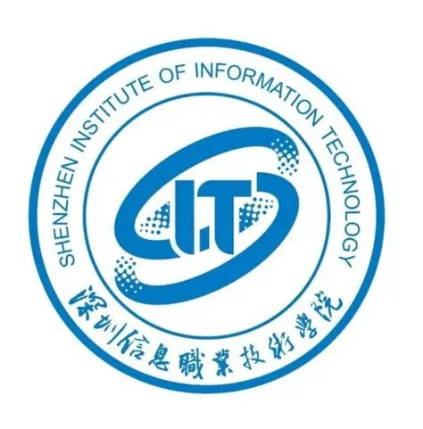
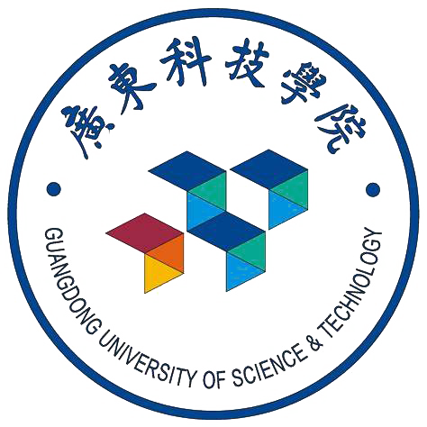

产品设计师 / 形式追随功能
Enter 探索2020-2025 | 工业设计专业
从深信大到广科院的学术进阶
博思纵横 | ID设计师
70% 方案采纳率与核心项目落地
即将上线：精选产品设计案例库
设计之外的审美探索与日常观察

主修：工业设计
在三年的学习中保持了极高的学术水准，并作为班委负责学术事务的组织与协调。
NEXT: 广东科技学院 →
主修：工业设计 (本科阶段)
侧重于将文化创意与智能家居结合，探索家具设计的创新形态与结构表现。
返回板块首页 ↑ID设计师 / ID DESIGNER
输出了 **600版** 概念草图与 **10套** 高精度3D模型。通过CMF介入，实现了产品量产落地的成本优化。
主导 **300+** 样本用户调研，提炼 **15项** 核心需求。助力产品上市首月销量突破 **1500台**。
建立标准化设计文档库，将产品开发周期压缩 **18%**，设计迭代效率提升 **25%**。